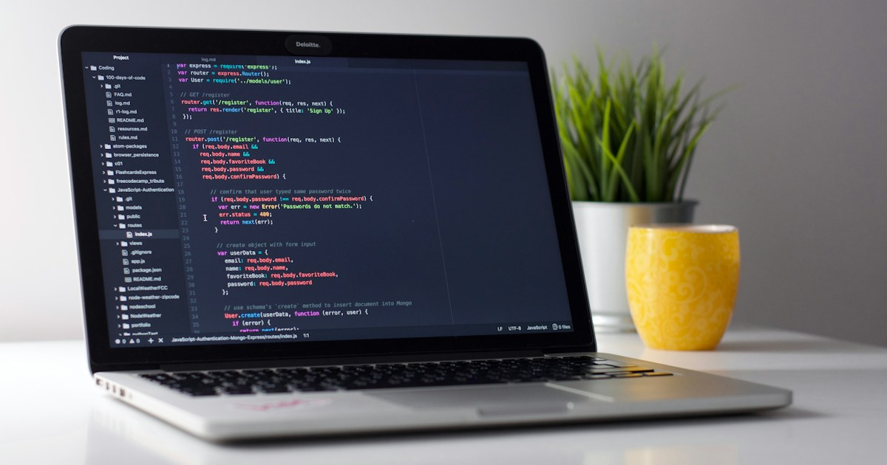

Com funciona Google Antigravity?
El vostre assistent de desenvolupament instal·lat directament al vostre ordinador

Instal·lació de l'aplicació al dispositiu
Descarregueu l'instal·lador oficial per al vostre sistema operatiu (Windows o macOS). Obriu l'aplicació i inicieu sessió amb el vostre compte habitual de Google.
La carpeta de treball (workspace)
Aquest és el pas més important per mantenir l'ordre: abans de començar una activitat, creeu una carpeta específica al vostre ordinador (per exemple Documents/Materials-Aula/unitat1) i obriu-la des del menú Open Folder d'Antigravity.
Tria del model d'intel·ligència artificial
Antigravity permet escollir entre diferents models de la família Gemini segons la feina que vulgueu fer:
- Models ràpids (com Flash): responen immediatament. Són ideals per obtenir idees inicials o redactar enunciats breus.
- Models de raonament avançat (com Pro): pensen durant uns segons més abans de respondre. Són els recomanats per escriure l'estructura sencera d'una pàgina web interactiva, ja que connecten millor les funcions i cometen menys errors tècnics.
Els comptes XTEC poden accedir a Google Antigravity. El catàleg de models disponible pot ser més limitat que amb alguns comptes personals de Google, de manera que durant la sessió no cal que totes les persones vegin exactament les mateixes opcions al selector.
Com demanar recursos a l’agent: criteris docents
Per evitar resultats genèrics, concreteu aquests criteris en la vostra primera indicació:
1. Nivell i objectiu: indiqueu el curs i què ha d’aprendre o practicar l’alumnat.
2. Fitxer autònom: demaneu un index.html amb els recursos necessaris dins de la carpeta del projecte.
3. Accessibilitat web: demaneu contrast suficient, navegació amb teclat i una estructura que funcioni també en pantalles petites, prenent les WCAG com a referència tècnica.
4. DUA: reviseu si el disseny ofereix suports adequats per comprendre la tasca i participar-hi sense crear barreres innecessàries.
5. Retroacció pedagògica: quan hi hagi errors, demaneu una explicació que ajudi a comprendre el contingut en lloc de mostrar només “incorrecte”.
Opcions de configuració recomanades per a docents que no l'han obert mai
Si és la primera vegada que obriu Google Antigravity, no cal que us preocupeu per la gran quantitat de botons i menús. Ajusteu aquestes opcions des de la icona d'engranatge (Settings) per assegurar una experiència guiada i amb ple control sobre el disseny pedagògic:
Plan Review Policy (Política de revisió del pla)
Opció recomanada: Always Review Plans (Revisar sempre els plans) o Review when modifying files.
Com us ajuda a l'aula: En lloc d'escriure codi a cegues, l'agent us presenta primer un guió de treball detallat (com estructurarà l'activitat i quins fitxers crearà). L'eina s'atura i us demana el vistiplau. Això us permet revisar l'enfocament educatiu, suggerir millores ("Afegiu també preguntes sobre el relleu litoral") o aprovar el pla amb un sol clic abans que toqui cap arxiu.
Control docent total sobre el contingut i l'orientació didàctica.Permisos a Windows - configuració recomanada
Opció recomanada: manteniu Terminal command auto execution en Request Review. Activeu l’accés de l’agent a fitxers fora del workspace només quan necessiteu treballar en una altra ubicació de l’ordinador.
Com us ajuda a l’aula: l’agent us demana confirmació abans d’executar comandaments i podeu revisar els accessos que surten de la carpeta del projecte. Per a la pràctica de descàrrega de PDF, això permet escriure a Documents sense donar permís general perquè actuï sense supervisió.
Model Selection & Thinking (Model i raonament)
Opció recomanada: Models de la gamma Pro (amb raonament o Thinking si està disponible en el vostre pla) per al disseny inicial; models de la gamma Flash per a retocs ràpids.
Com us ajuda a l'aula: Amb el raonament intern activat, el model reflexiona durant uns segons abans d'escriure el codi per assegurar que els estils CSS es vegin bé a pantalles petites i que la lògica de correcció no doni per bona una resposta errònia.
Màxima fiabilitat pedagògica i menys errades en les activitats.Artifacts & Browser Preview (Previsualització en viu)
Com funciona: Panell lateral d'arxius i finestra de previsualització interactiva integrada.
Com us ajuda a l'aula: Podeu prémer sobre l'arxiu index.html i veure la pàgina web en funcionament directe al mateix Antigravity. Podeu fer clic als botons i respondre les preguntes com si fóssiu un alumne per provar l'activitat en temps real.
Assistent per redactar la vostra primera indicació
Seleccioneu les característiques del vostre recurs per generar automàticament el text de la indicació llest per enganxar a Google Antigravity:
La vostra primera web funcional
Completeu un primer cicle de treball amb Antigravity abans de passar a GitHub
Creeu un microrecurs
Copieu la indicació següent i adapteu només el contingut de la pregunta a la vostra matèria. Manteniu la primera versió deliberadament petita.
Indicació per començar
Crea una pàgina web educativa molt senzilla sobre un contingut de la meva matèria. Ha de mostrar una pregunta o repte i un botó que permeti veure la resposta. Fes-la clara i adequada per al meu alumnat. Crea tots els fitxers necessaris dins d'aquesta carpeta i utilitza index.html com a pàgina principal. No utilitzis serveis externs ni demanis dades personals. Quan acabis, explica'm breument què has creat i com puc comprovar que funciona.
Comproveu que funciona
Obriu la previsualització i feu la interacció com si fóssiu alumnat. Si podeu veure la pregunta i mostrar-ne la resposta, ja heu creat el vostre primer recurs web funcional.
Demaneu una sola millora
Modifiqueu el recurs que ja teniu en lloc de tornar a començar. Podeu canviar el contingut de la pregunta o millorar el contrast. Si preferiu un altre ajust, demaneu-lo de manera concreta. Torneu a provar la pàgina després del canvi.
Mireu què ha creat l'agent
Obriu la carpeta de treball. No cal que sapigueu escriure aquests fitxers a mà, però convé començar a reconèixer què forma part del projecte.
el-meu-recurs/ ├── index.html ├── styles.css (si l'agent separa els estils) ├── app.js (si hi ha lògica separada) └── assets/ (si hi ha recursos locals)
Bons hàbits mentre treballeu amb l'agent
- Feu canvis petits i comproveu el resultat abans de continuar.
- Si no enteneu una modificació, demaneu a l'agent que us expliqui què ha fet amb llenguatge senzill.
- No torneu a generar tot el projecte quan només necessiteu corregir una part.
- Manteniu dins de la carpeta de treball allò que forma part del recurs.
Ampliació: descàrrega massiva de documents PDF d'un lloc web a Documents
Un exemple per explorar què pot fer un agent més enllà de crear una pàgina web
Trieu la pàgina web d'origen i la carpeta de destinació
Copieu l'adreça web (URL) on hi ha el llistat de fitxers i penseu un nom clar per a la carpeta on voleu desar-los dins de Documents (per exemple: Documents/dossiers-didactics o Documents/curriculum-primaria).
Envieu la indicació a l'assistent de Google Antigravity
Obriu Antigravity i escriviu la petició en llenguatge natural al xat. Podeu fer servir la plantilla d'indicació que teniu a continuació. L'assistent analitzarà el codi de la pàgina web, cercarà tots els enllaços que acaben en .pdf i prepararà un pla d'acció.
Reviseu el pla i comproveu la carpeta al vostre ordinador
Gràcies al mode Plan Review, Antigravity us indicarà primer què vol fer. Quan intenti accedir a una carpeta de Documents situada fora del workspace o consultar la web, pot aparèixer una sol·licitud de permís. Comproveu que la ruta de destinació sigui la carpeta que heu triat i que el domini coincideixi amb la pàgina d’origen abans d’aprovar-la. Quan acabi, podreu obrir l’Explorador de fitxers de Windows per consultar els documents.
Plantilla d'indicació llesta per copiar i fer servir a Antigravity:
Només cal que substituïu la URL i el nom de la carpeta pel vostre cas concret:
Necessito que analitzis la següent pàgina web i em descarreguis tots els documents PDF que conté: URL: [ENGANXEU AQUÍ L'ADREÇA WEB DE LA PÀGINA] Si us plau, segueix aquestes instruccions: 1. Inspecciona la pàgina i localitza tots els enllaços que apuntin a documents que acabin en .pdf. 2. Crea una carpeta local a la meva carpeta de Documents que es digui "[Nom de la carpeta, ex: dossiers-competencials]". 3. Descarrega-hi tots els fitxers PDF de manera ordenada, amb el seu nom original o amb un títol clar que identifiqui el document. 4. Si algun enllaç falla o està trencat, anota'l i continua amb els altres. 5. Quan acabis, mostra'm un resum amb la llista completa de fitxers descarregats i la seva mida en megabytes.
Pàgines d'accés obert
Aquesta automatització funciona en pàgines públiques (repositoris de materials, publicacions educatives, seus electròniques). Si la pàgina demana iniciar sessió amb usuari i contrasenya privats, l'assistent no hi podrà accedir per garantir la seguretat.
Carpeta neta i sense duplicats
Tindreu tots els materials organitzats en una sola carpeta a Documents, sense haver d'anar a buscar fitxers dispersos a la carpeta de Baixades ni haver de reanomenar arxius a mà.
Comparació: Google Antigravity, OpenAI Codex i Claude Code d'Anthropic
Tres agents de desenvolupament potents, amb diferències sobretot en la interfície i en la manera de supervisar el treball
| Eina | Format i interfície | Què permet fer | Consideracions per a la formació |
|---|---|---|---|
|
Google Antigravity (Google) |
App, IDE, extensions i CLI Google ofereix una aplicació d'escriptori independent, l'Antigravity IDE i extensions per a editors, a més d'una interfície de terminal. |
|
Eina triada al taller La tria respon al flux visual que seguim durant la formació. Els comptes XTEC poden mostrar un catàleg de models diferent del que apareix en altres comptes de Google. |
|
OpenAI Codex (OpenAI) |
ChatGPT, IDE, CLI i núvol Codex es pot utilitzar des de l'aplicació de ChatGPT, des de l'extensió per a VS Code o des del terminal. També permet delegar tasques al núvol. |
|
Alternativa visual Ja no és un simple autocompletador i no forma part de GitHub Copilot. La interfície gràfica redueix molt la barrera d'entrada, tot i que alguns fluxos fan més visibles conceptes de Git i de repositoris. L'accés depèn del pla de ChatGPT. |
|
Claude Code (Anthropic) |
Escriptori, IDE, web i terminal Claude Code està disponible a l'aplicació d'escriptori, al terminal i al web. També s'integra amb VS Code i JetBrains. |
|
Alternativa visual El terminal continua sent una opció potent, però ja no és l'única via d'entrada. Amb una subscripció compatible es pot iniciar sessió amb el compte de Claude, sense haver de configurar necessàriament una clau d'API. |
Les funcions i les modalitats d'accés evolucionen ràpidament. Aquesta taula compara sobretot l'experiència de treball que és rellevant per al taller, no estableix una classificació de la qualitat dels models.
Per què triem Google Antigravity per a aquesta formació?
Antigravity no és l'única opció accessible. El triem perquè el flux del taller es pot seguir de manera visual, mantenint visibles la carpeta del projecte i les decisions de l'agent. Això permet centrar la sessió en el disseny del recurs i no en aprendre una interfície de desenvolupament concreta.
I si ja feu servir Codex o Claude Code?
Podeu aplicar-hi gairebé el mateix procés de treball. Totes dues alternatives poden rebre una indicació en llenguatge natural i modificar un projecte existent. Canvien sobretot la interfície i els controls de supervisió; l'accés també depèn del compte.
Videotutorials oficials de Google Antigravity
Si voleu aprofundir en el funcionament d'Antigravity, us recomanem aquests videotutorials oficials del canal de Google (@googleantigravity ↗), dissenyats per guiar en la configuració d'agents i espais de treball:
Google Antigravity 2.0: Guia oficial d'inici
Recorregut pel funcionament de Google Antigravity 2.0 i la creació d'aplicacions des de l'espai de treball.
Introducció a les habilitats dels agents (Agent Skills)
Tutorial oficial que explica com configurar i assignar habilitats modulars als agents per dur a terme tasques educatives concretes i automatitzades.
Demostració de control remot i supervisió d'agents
Mostra com funciona la supervisió en directe i el control remot de les accions que l'assistent realitza sobre els fitxers i l'entorn de treball.
Quina modalitat d'Antigravity triar per a la docència?
Comparació oficial entre l'entorn gràfic d'escriptori (IDE), Antigravity 2.0, la línia d'ordres i el paquet per a desenvolupadors per saber quina opció s'adapta millor a la vostra feina.
Creació d'eines d'automatització personalitzades
Guia oficial per crear eines a mida que connecten serveis externs i faciliten la creació de recursos didàctics.
Canal oficial de Google Antigravity
Accediu al repositori complet de vídeos, sèries periòdiques (Mission Report), actualitzacions de la plataforma i demostracions oficials de Google.